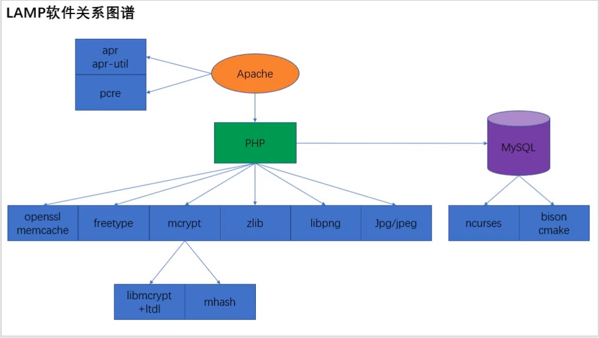

Linux 运维NFS 服务器：注意事项：系统管理：定时任务crontab日志管理虚拟化Docker技术kubernetesLAMP搭建一、LAMP源码安装：a、操作系统：Centos 7.6b、关闭 Selinux 和 iptables (Centos 6) 、firewalld (Centos 7) 防火墙c、启用本地 yum 源：d、解压软件包e、安装软件f、LAMP关系图谱MySQL 数据库创建删除用户：密码管理权限管理数据操作表操作库操作视图操作事务日志数据库变量存储过程主从复制SQL Server表操作
rpcblind，再启动nfs；nfs所使用的包：nfs-untils；/etc/exports。crontabcrontab基本用法：x1[root@localhost ~]# crontab [options]2Usage:3 crontab [options] file4 crontab [options]5 crontab -n [hostname]67Options:8 -u <user> define user9 -e edit user's crontab10 -l list user's crontab11 -r delete user's crontab12 -i prompt before deleting13 -n <host> set host in cluster to run users' crontabs14 -c get host in cluster to run users' crontabs15 -s selinux context16 -x <mask> enable debugging17corntab格式：xxxxxxxxxx291# crontab配置文件2[root@localhost ~]# cat /etc/crontab3SHELL=/bin/bash4PATH=/sbin:/bin:/usr/sbin:/usr/bin5MAILTO=root67# For details see man 4 crontabs89# Example of job definition:10# .---------------- minute (0 - 59)11# | .------------- hour (0 - 23)12# | | .---------- day of month (1 - 31)13# | | | .------- month (1 - 12) OR jan,feb,mar,apr ...14# | | | | .---- day of week(0 - 6)(Sunday=0 or 7) OR sun,mon,tue,wed,thu,fri,sat15# | | | | |16# * * * * * user-name command to be executed1718# 第1列表示分钟0～59 每分钟用*或者 */1表示19# 第2列表示小时0～23（0表示0点）20# 第3列表示日期1～3121# 第4列表示月份1～1222# 第5列标识号星期0～6（0或7表示星期天）23# 第6列要执行的命令2425# *：表示任意时间都，实际上就是“每”的意思。可以代表00-23小时或者00-12每月或者00-59分26# -：表示区间，是一个范围，00 17-19 * * * command，每天17,18,19点的整点执行命令27# ,：是分割时段，30 3,19,21 * * * command，每天3，19,21点的30分执行命令28# /n：表示分割，可以看成除法，*/5 * * * * command，每隔五分钟执行一次29
Centos 7.6xxxxxxxxxx51[root@localhost ~]# uname -r23.10.0-1062.18.1.el7.x86_643[root@localhost ~]# cat /etc/redhat-release 4CentOS Linux release 7.7.1908 (Core)5[root@localhost ~]# Selinux 和 iptables (Centos 6) 、firewalld (Centos 7) 防火墙xxxxxxxxxx171# 查看Selinux状态2[root@localhost ~]# getenforce3Disabled4# 查看Selinux配置文件,关闭后需重启5[root@localhost ~]# cat /etc/selinux/config 67# This file controls the state of SELinux on the system.8# SELINUX= can take one of these three values:9# enforcing - SELinux security policy is enforced.10# permissive - SELinux prints warnings instead of enforcing.11# disabled - No SELinux policy is loaded.12SELINUX=disabled13# SELINUXTYPE= can take one of three values:14# targeted - Targeted processes are protected,15# minimum - Modification of targeted policy. Only selected processes are protected. 16# mls - Multi Level Security protection.17SELINUXTYPE=targeted xxxxxxxxxx251# Centos 62# 查看iptables防火墙规则3[root@localhost ~]# iptables -L4Chain INPUT (policy ACCEPT)5target prot opt source destination 67Chain FORWARD (policy DROP)8target prot opt source destination 9DOCKER-ISOLATION all -- anywhere anywhere 10DOCKER all -- anywhere anywhere 11ACCEPT all -- anywhere anywhere ctstate RELATED,ESTABLISHED12ACCEPT all -- anywhere anywhere 13ACCEPT all -- anywhere anywhere 1415Chain OUTPUT (policy ACCEPT)16target prot opt source destination 1718Chain DOCKER (1 references)19target prot opt source destination 2021Chain DOCKER-ISOLATION (1 references)22target prot opt source destination 23RETURN all -- anywhere anywhere 24# 清除iptables防火墙规则25[root@localhost ~]# iptables -Fxxxxxxxxxx31# Centos 7关闭防火墙2[root@localhost ~]# systemctl stop firewalld3[root@localhost ~]# systemctl disable firewalld
yum 源：xxxxxxxxxx81# 配置本地yum源2[root@localhost ~]# cat /etc/yum.repos.d/local.repo 3[Local]4name=CentOS-$releasever - Local5baseurl=file:///mnt/cdrom/6gpgcheck=07enabled=18gpgkey=file:///etc/pki/rpm-gpg/RPM-GPG-KEY-CentOS-7xxxxxxxxxx221# 查询要挂载的硬盘 2[root@localhost ~]# fdisk -l34# 挂载5[root@localhost ~]# mount /dev/cdrom /mnt/cdrom/6mount: /dev/sr0 is write-protected, mounting read-only7[root@localhost ~]# df -h8Filesystem Size Used Avail Use% Mounted on9devtmpfs 727M 0 727M 0% /dev10tmpfs 739M 0 739M 0% /dev/shm11tmpfs 739M 9.5M 729M 2% /run12tmpfs 739M 0 739M 0% /sys/fs/cgroup13/dev/mapper/centos-root 27G 4.0G 24G 15% /14/dev/sda1 1014M 163M 852M 16% /boot15tmpfs 148M 0 148M 0% /run/user/016/dev/sr0 4.3G 4.3G 0 100% /mnt/cdrom1718# 不使用时取消挂载19[root@localhost ~]# umount /mnt/cdrom/2021# 安装编译工具22[root@localhost ~]# yum -y install gcc gcc-c++ makexxxxxxxxxx111# 解压软件包2[root@localhost ~]# vim lamp.sh3ls lamp >lamp.txt5for TAR in lamp.txt6 do7 tar -zxf $TAR8 done9rm -rf lamp.txt10[root@localhost ~]# chmod a+x lamp.sh11[root@localhost ~]# ./lamp.shxxxxxxxxxx31# 编译安装2[root@localhost ~]# ./config --prefix=/usr/local/软件名3[root@localhost ~]# make && make install
获取帮助：help command
使用 CREATE USER 创建普通用户：
CREATE USER创建新用户时必须拥有CREATE USER权限xxxxxxxxxx11CREATE USER username[@'hostname'] [IDENTIFIED BY [PASSWORD] 'passwd'];username：新创建的用户名hostname：主机名 --此处的hostname，是指该用户只能在本地登录，不能在另外一台机器上远程登录。如果想远程登录的话，将hostname改为%，表示在任何一台电脑上都可以登录。也可以指定某台机器可以远程登录。IDENTIFIED BY：设置用户的密码PASSWORD：使用哈希值设置密码，该参数是可选的，如果，密码是一个普通的字符串，就不需要使用passwd：用户的密码xxxxxxxxxx11CREATE USER zabbix IDENTIFIED BY '123456';使用INSERT INTO语句创建普通用户：
xxxxxxxxxx21INSERT INTO mysql.user (Host,User,Password)2VALUES('hostname','username',PASSWORD('password'));xxxxxxxxxx11INSERT INTO mysql.user(Host,User,Password) VALUES ('localhost','zabbix',password('123456'));使用GRANT语句创建普通用户
xxxxxxxxxx11GRANT priv_type|privileges ON database.table TO 'username' @'hostname' [IDENTIFIED BY 'password' [WITH option]];priv_type|privileges，表示该用户，具有的权限信息
all 代表所有权限select,update 权限database.table 表示新用户的权限范围表，在指定的数据库、表上有自己的权限
username新用户的名称
hostname 主机名
password新用户的密码
xxxxxxxxxx11GRANT all ON *.* TO 'root'@'localhost' IDENTIFIED BY '123456' WITH grant option; --创建给别人授权的用户删除用户
xxxxxxxxxx11DROP USER username;设置弱密码
查看password密码策略的变量名
xxxxxxxxxx131mysql> SHOW VARIABLES LIKE 'validate_password%';2+--------------------------------------+-------+3| Variable_name | Value |4+--------------------------------------+-------+5| validate_password.check_user_name | ON |6| validate_password.dictionary_file | |7| validate_password.length | 8 |8| validate_password.mixed_case_count | 1 |9| validate_password.number_count | 1 |10| validate_password.policy | LOW |11| validate_password.special_char_count | 1 |12+--------------------------------------+-------+137 rows in set (0.01 sec)修改validate_password.policy参数的值
xxxxxxxxxx11mysql> set global validate_password.policy=0;修改validate_password.length参数的值来设置密码的最小长度（这个值是由validate_password.mixed_case_count、validate_password.number_count、validate_password.special_char_count 需大于等于这三个值和的最小值）
xxxxxxxxxx11mysql> set global validate_password.length=4;修改用户密码
xxxxxxxxxx11mysql> SET PASSWODR=PASSWORD('new_password'); #为自己改密码xxxxxxxxxx11mysql> SET PASSWODR FOR 'username'@'hostname'=PASSWORD('new_password'); #高版本不适用xxxxxxxxxx11mysql> ALTER USER 'root'@'localhost' IDENTIFIED WITH mysql_native_password BY 'password'; #弱密码须先修改密码策略xxxxxxxxxx11mysql> UPDATE mysql.user SET authentication_string=password('new_password') WHERE User='username' AND Host='hostname'; #需要对应权限权限应用顺序
user ==> db ==> tables_priv ==> columns_priv
查看权限
xxxxxxxxxx11SHOW grants [for 'username'@'hostname']\G取消用户权限REVOKE
xxxxxxxxxx11mysql> REVOKE priv_type|privileges ON database.table FROM 'username'@'hostname'; #取消所有权限xxxxxxxxxx11mysql> REVOKE ALL PRIVILEGES,GRANT OPTION FROM 'username'@'hostname';插入数据：
xxxxxxxxxx41# 语法2INSERT INTO 表名 (列名1,列名2,列名3) VALUES (内容1,内容2,内容3);34mysql> INSERT INTO mem(name,birthday,age) VALUES ('zz',1992-2-2,17);删除数据：
xxxxxxxxxx71# 语法2DELETE FROM 表名 WHERE 条件;34# 删除表中数据,delete删除时若有筛选条件，则删除筛选出的数据，truncate删除整张表，不能添加筛选条件,delete删除表后，插入数据时自增长列的值从断点开始，truncate从1开始,delete删除可以回滚，truncate删除不能回滚5delete from 表名;6truncate table 表名7
修改数据：
xxxxxxxxxx31# 语法2UPDATE 表名 SET 列名=新值 WHERE 条件;3
查询数据：
SQL 99语法：
SELECT 查询列表 FROM 表名1 别名 [连接类型] JOIN 表名2 别名 ON 连接条件;
连接条件：
[WHERE 筛选条件]
[GROUP BY分组]
[HAVING分组后的筛选条件]
[ORDER BY排序列表]
[LIMIT offset,size];
offset：要显示条目的起始索引 （起始索引从0开始）size：要显示的条目个数连接类型：
内连接：inner
外连接：
left [outer] left左边为主表right [outer] right右边为主表full [outer]crossxxxxxxxxxx241# 语法2SELECT 列名 FROM 表名 [WHERE 条件];3# 结果为deptno为10 304mysql> select * from emp where deptno in (10,30);56# 去除重复数据：distinct7mysql> select distinct deptno from emp;89# 字符串拼接：concat1011mysql> select concat(ename,job) as '工作姓名拼接' from emp;1213# 降序排序14mysql> select 列名 from 表名 order by 列名(id) desc;1516# 添加别名17mysql> select id(列名) ‘别名’ ,(列名) as ‘别名’ from 表名;1819# 查看表的已存数据20mysql> select * from 表名 (select 列名 from 表名)2122# 查询前5条的员工信息23mysql> select * from emp limit 0,5;24
创建表：
xxxxxxxxxx111# 创建表2mysql> CREATE TABLE `表名` (3 `mid` int(11) NOT NULL AUTO_INCREMENT,4 `name` varchar(20) DEFAULT NULL,5 `birthday` date DEFAULT NULL,6 `age` int(11) DEFAULT NULL,7 PRIMARY KEY (`mid`)8) ENGINE=InnoDB AUTO_INCREMENT=7 DEFAULT CHARSET=utf8;910# 复制表11mysql> create table 新表名(select 列名1,列名2,列名3 from 要复制的表名);
修改表：
xxxxxxxxxx261# 修改表名2mysql> alter table mem rename mem1;3# 修改表属性4mysql> alter table mem modify column name varchar(20);5mysql> alter table mem change age age varchar(20);6mysql> ALTER TABLE mem CHANGE COLUMN mid mid int NOT NULL AUTO_INCREMENT PRIMARY KEY;7# 添加列8mysql> alter table mem add id int;9# 删除表中的列10mysql> alter table 表名 drop column 列名;11mysql> alter table user drop id;12# 添加首列13mysql> alter table 表名 add column 列名 类型 (not null) first;14# 添加尾列15mysql> alter table 表名 add column 列名 类型 (not null);16# 添加在指定位置17mysql> alter table 表名 add column 列名 类型 not null after 列名;18# 修改列名19mysql> alter table 表名 change 要修改的列名 修改后的列名 类型;20# 修改列属性21mysql> alter table 表名 modify column 列名 类型;22# 删除主键23mysql> ALTER TABLE mem DROP PRIMARY KEY;24# 查询引用该主键的外键25mysql> SELECT * FROM INFORMATION_SCHEMA.KEY_COLUMN_USAGE WHERE REFERENCED_TABLE_NAME ='course';26mysql> ALTER TABLE course DROP FOREIGN KEY `member_list_ibfk_1`;
删除表
xxxxxxxxxx11DROP TABLE 表名;查询表：
xxxxxxxxxx51# 查看表的各种数据类型2mysql> describe ‘表名’;3# 查看创建库/表4mysql> SHOW CREATE 库名/表名;5
xxxxxxxxxx91# 查看当前所在库2mysql> select database();34# 查看当前数据库版本5mysql> select version(); 6mysql> mysql -V;7mysql> mysql --version8mysql> status;9mysql> \s;
xxxxxxxxxx21# 创建视图2mysql> create or replace view 视图名 as 复杂查询;
xxxxxxxxxx21# 开启事务2mysql> START TRANSACTION;
xxxxxxxxxx31# 查看当前正在使用的日志文件2mysql> SHOW MATER STATUS;3mysql> SHOW BINLOG EVENTS IN '日志名';
系统变量：
xxxxxxxxxx111# 查看所有系统变量2mysql> show global | [session] variables;34# 查看满足条件系统变量5mysql> show global | [session] variables like '%char%';6# 查看指定系统变量的值7mysql> select @@global | [session] .系统变量名;8mysql> select @@系统变量名;9# 为系统变量赋值10mysql> set global | [session] 系统变量名 = 值;11mysql> set @@global | [session] .系统变量名 = 值;
用户变量：
xxxxxxxxxx51# 声明并初始化2mysql> set @用户变量名 = 值;3mysql> select @用户变量名 := 值;4# 查看用户变量的值5mysql> select @用户变量名;
使用delimiter符号 定义存储过程体单条SQL结束语句标记
create procedure 存储过程名(参数列表) begin 存储过程体(一组合法的SQL语句) end;
in out inout) 参数名 参数类型call 存储过程名(实参列表);| 日志类型 | 名称 | 描述 |
|---|---|---|
| error log | 错误日志 | 排错 /var/log/mysqld.log 默认开启 |
| bin log | 二进制日志 | 备份 增量备份 DDL DML DCL |
| Relay log | 中继日志 | 复制 接受 replication master |
| slow log | 慢查询日志 | 调优 查询时间超过指定值 |
xxxxxxxxxx81mysql> show master status;2mysql> show binary logs;3mysql> show binlog events in "file";45mysql> grant replication slave on *.* to 'user'@'%' identified by '123456';67mysql> CHANGE MASTER TO MASTER_HOST='10.188.201.151',MASTER_USER='user',MASTER_PASSWORD='123456',MASTER_PORT='3306',MASTER_LOG_FILE='mysql-bin.000001',MASTER_LOG_POS=751,MASTER_CONNECT_RETRY=10;8
修改表属性
xxxxxxxxxx3211：向表中添加字段2Alter table [表名] add [列名] 类型342: 删除字段5Alter table [表名] drop column [列名]673: 修改表中字段类型 （可以修改列的类型，是否为空）8Alter table [表名] alter column [列名] 类型9104：添加主键11Alter table [表名] add constraint [约束名] primary key( [列名])12135：添加唯一约束14Alter table [表名] add constraint [约束名] unique([列名])15166：添加表中某列的默认值17Alter table [表名] add constraint [约束名] default(默认值) for [列名]18197：添加约束20Alter table [表名] add constraint [约束名] check (内容)21228:添加外键约束23Alter table [表名] add constraint [约束名] foreign key(列名) referencese 另一表名(列名)24259:删除约束26Alter table [表名] DROP constraint [约束名]272810:重命名表29exec sp_rename '[原表名]','[新表名]'303111：重命名列名32exec sp_rename '[表名].[列名]','[表名].[新列名]'创建用户：
xxxxxxxxxx11CREATE USER user_name identified by password [defaule tablespace 表空间名];创建角色：
xxxxxxxxxx11CREATE ROLE role_name;
用户授权
xxxxxxxxxx11GRANT privileges TO user;角色授权：
xxxxxxxxxx11GRANT privileges TO role;